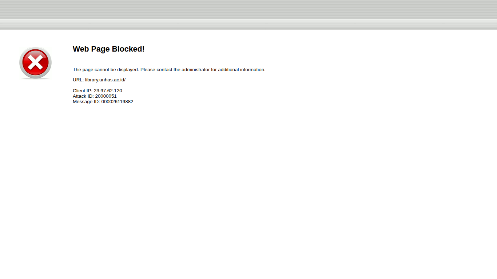
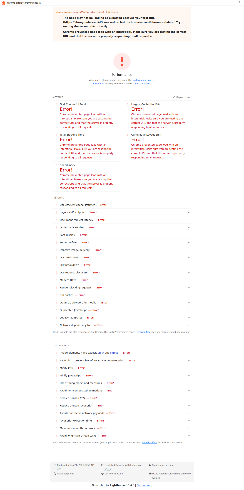

Laporan Pengujian Kinerja Website
URL: https://library.unhas.ac.id/ | Tanggal: 2026-06-21 10:45 UTC | Environment: GitHub Codespaces
1) Ringkasan Eksekusi
Status Lighthouse: Gagal valid (interstitial error di headless Chrome)
Pengujian TTFB menggunakan curl berhasil. Pengujian Lighthouse di environment container mengalami interstitial error pada Chrome headless.
2) Hasil curl / TTFB
===== HASIL CURL / TTFB =====
TTFB: 0.802950s
DNS Lookup: 0.041254s
Connect: 0.076600s
Total Time: 0.907899s
Size Download: 146267 bytes
HTTP Code: 200
3) Hasil Metrik Lighthouse (Desktop)
| Metrik | Nilai |
|---|
| Metrik belum tersedia karena audit Lighthouse tidak valid. |
Pesan error: Chrome prevented page load with an interstitial. Make sure you are testing the correct URL and that the server is properly responding to all requests.
4) Screenshot Hasil
Screenshot Website

Screenshot Lighthouse Desktop Report

5) Penjelasan & Analisis
- TTFB sekitar 0.8 detik menunjukkan respons server awal masih relatif cepat.
- Audit Lighthouse belum valid karena halaman dialihkan ke interstitial pada browser headless di container.
- Untuk data final desktop/mobile yang akurat, jalankan ulang Lighthouse di mesin lokal atau CI runner yang tidak terblokir interstitial.
- Screenshot sudah disertakan sebagai bukti proses pengujian dan kondisi output saat ini.